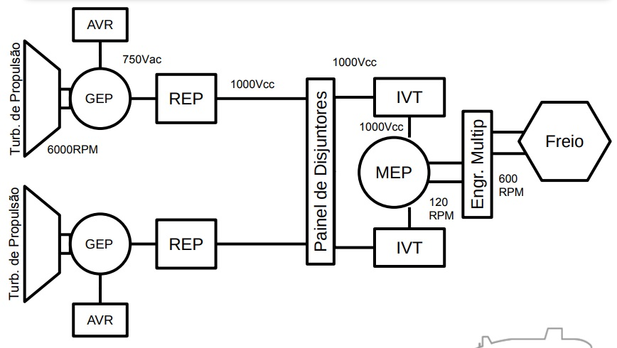

Cargas não-essenciais ou de serviço:
pode sofrer interrupções por tempo
indeterminado.
Cargas essenciais:
podem sofrer apenas curtas interrupções em seu
suprimento de energia. (Diesel Geradores de Emergência)
Cargas vitais:
não podem ter a sua alimentação de energia elétrica
interrompida. (Módulos de Potência Ininterrupta)
Segurança Nuclear (Classe 1E): equipamentos e sistemas elétricos que são
essenciais para:
• O desligamento de emergência do reator;
• A isolação da contenção;
• O resfriamento do núcleo do reator; e
• A contenção e remoção de calor do reator; ou que são de outro modo
essenciais na prevenção de liberação significativa de material
radioativo para o ambiente.
Segurança Não-Nuclear (Não-classe 1E - Classe N1E):
os equipamentos
que não se encaixam na definição anterior.
OBS: Nem toda carga elétrica Classe 1E é vital.
Redundante:
equipamento ou sistema que duplica a função essencial de
outro equipamento ou sistema, na medida em que possa desempenhar a
função requerida, independentemente do estado de funcionamento ou falha
do outro
Independente:
separação física entre as duas linhas de equipamentos, de
forma que cada um opere de forma autônoma, e que o mau funcionamento
de um lado não afeta o funcionamento do outro.
Trem: contém pelo menos um circuito Classe 1E:
• Trem A e Trem B.
Divisão:contém apenas circuitos N1E:
• Naval (Blocos 20, 30 e 40):
• Boreste (BE);
• Bombordo (BB).
Demais:
• Divisão 1 e Divisão 2
Através de duas Linhas de Transmissão dependentes (nas mesmas torres), chega no SEP (Subestação Principal de Aramar), tem sua tensão reduzida e alimenta a SUB1.
SUB1 alimenta as subestações 2, 3 e 4 com a rede externa.
Em funcionamento normal, a SUB2 pode ser alimentada pelo GES1 ou GES2 do PROTER, que é uma carga
da SUB3.
SUB2
- SUB2;
- SUB3;
- SUB4;
- Infraestrutura;
- PAIR;
- TR (PANC);
- PEC (N1E);
- SRE;
- SAEGV;
- SIB;
- PEC (1E);
- Sala de Controle;
- TR (PROTER);
- Bombas do Primário;
- Excitadores do MAB;
- SRP;
- SRCS;
- SVP;
- Portaria;
- PPTE;
- PAO;
- UR N1E (PANC);
- VAC (PAC/PANC);
Não há suprimento de energia elétrica da Rede Externa (REXT) para o
PROTER;
Os Geradores Elétricos Auxiliares (GEAs) suprem o PROTER e a SUB2.
Perda de todas as fontes alternadas do sistema
3 GDG's na SUB1, 2 geradores portateis que podem ser conectados na SUB2
Partida do Reator e Acionamento dos Turbogeradores Auxiliares;
Desligamento Programado do Reator;
Desligamento Programado de um dos Turbogeradores Auxiliares;
Desligamento Programado dos dois Turbogeradores Auxiliares;
Desligamento não-Programado dos Turbogeradores Auxiliares;
Desligamento do Reator devido à LOCA;
Blecaute;
Desligamento do Reator devido à Sismo.
5.1) Desligamento de um dos Turbogeradores Auxiliares e REXT disponível;
• 5.1.1) Transferência Rápida (t < 160 ms);
• 5.1.2) Transferência Lenta (160 ms < t < 2 s);
• 5.1.3) Falha nas Transferências (t > 2 s).
5.2) Desligamento de um dos Turbogeradores Auxiliares e REXT
indisponível;
5.3) Desligamento de ambos Turbogeradores Auxiliares e REXT
disponível;
5.4) Desligamento de ambos Turbogeradores Auxiliares e REXT
indisponível;

Manual
• Controle por corrente;
• Somente local.
Automático
• Controle por Tensão;
• Controle por Rotação do
MEP;
• Remoto.
Regulador de Tensão do Gerador. Sua função é ajustar a tensão de
saída do gerador na entrada do retificador.
Tensão de saída 0 a 1000Vcc. Sua função é converter corrente (tensão) alternada em corrente (tensão) contínua.
A velocidade do MEP é regulada por meio da tensão do AVR.
São os inversores que mudam a corrente contínua do painel de disjuntores para corrente alternada, pulsada para as 26 fases do MEP. 13 IVT de cada lado.
i) No MEP, a tensão é proporcional à velocidade; e
ii) O Torque é proporcional à corrente.
Logo, baixas rotações (baixa tensão) e alto torque irão demandar altos valores de corrente, que
devem ser evitados.
Provocaria redução no torque de partida
A limitação de potência e corrente é feita pelo AVR. Por questões operacionais e de segurança, o Limite de Potência do GEP deve ser maior que o Limite de Potência do MEP.